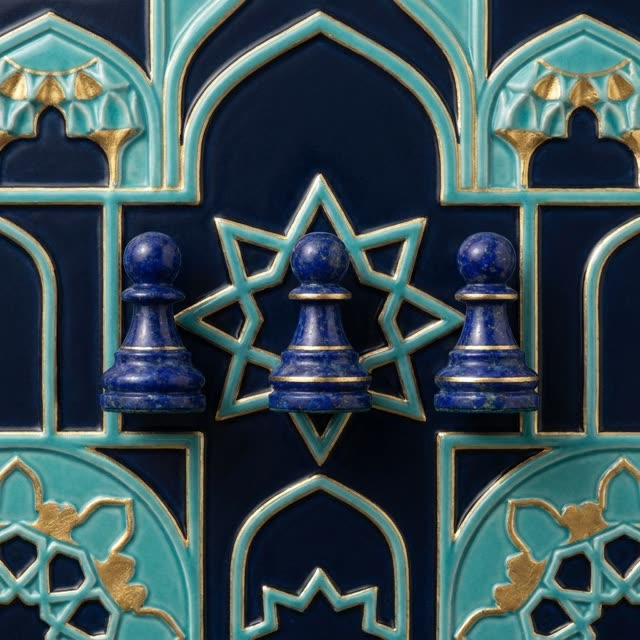

प्यादों का प्यादा, शहज़ादा और आकस्मिक राजा
महान शतरंज के सबसे चतुर नियम: तीन बार बदलने वाला प्यादा, और राजा जो कई हो सकते हैं।

महान शतरंज के ग्यारह प्यादे एक जैसे नहीं हैं: हर एक अपने मोहरे में बदलता है। प्यादों का प्यादा अलग है। आख़िरी पंक्ति तक पहुँचकर वह तुरंत नहीं बदलता, वहीं रहता है, और उसे पीटा नहीं जा सकता।
आगे लगभग पहेली शुरू होती है। जब विरोधी उससे मोहरा खोने से बच नहीं सकता, या वह एक साथ दो मोहरों पर हमला कर सकता है, तो प्यादा उस घर पर रख दिया जाता है। उसका दूसरा परिवर्तन उसे राजा के प्यादे के आरंभिक घर पर भेजता है, और तीसरा उसे आकस्मिक राजा बना देता है।
शहज़ादा और आकस्मिक राजा
राजा का प्यादा अंत तक पहुँचकर शहज़ादा बनता है। वह राजा की तरह चलता है और शाही मोहरा भी है। जब तक बिसात पर कई शाही मोहरे हैं, पहले अतिरिक्त को पीटना होता है: शहमात आख़िरी बचे हुए को दी जाती है। आकस्मिक राजा वैसे ही चलता है और, बाक़ी के विपरीत, अपने गढ़ में जा सकता है।
ये नियम एक ही पांडुलिपि से ज्ञात हैं और उनका पाठ विवादित है। हमारे खेल में वे “नियम” में बताए अनुसार लागू हैं, और विवादित स्थानों को हमने भविष्य की चर्चा के लिए चिह्नित किया है।